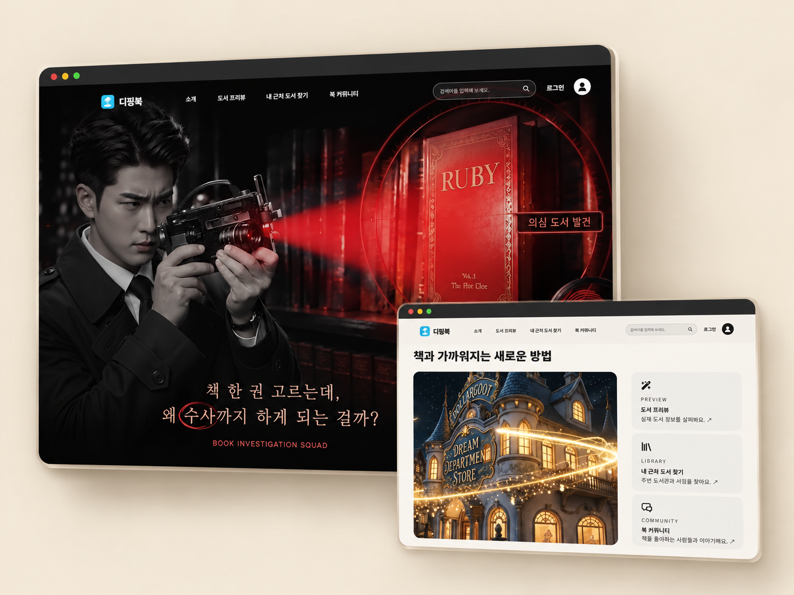
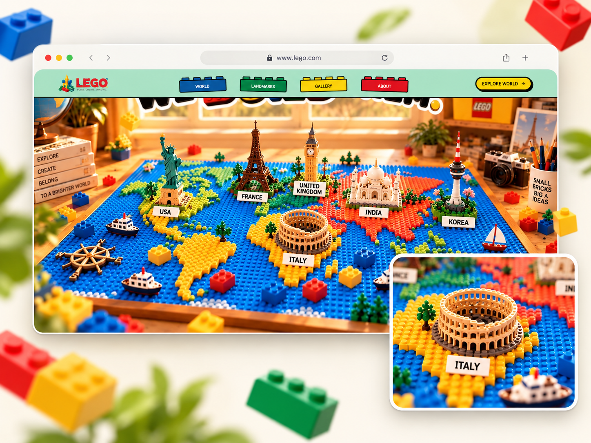
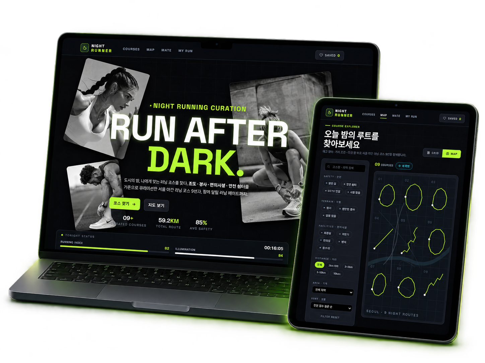
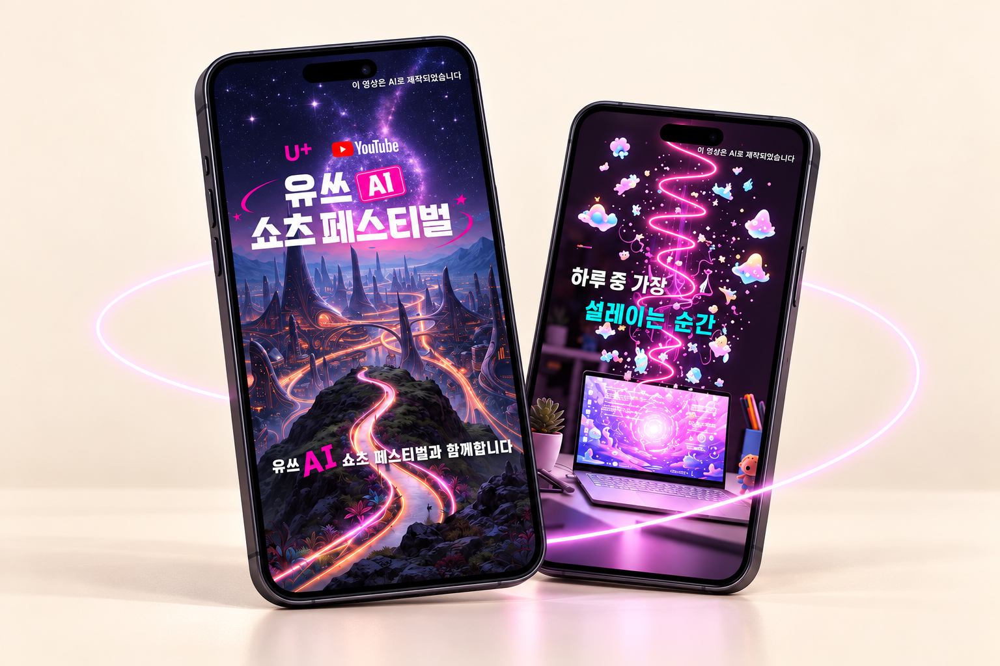
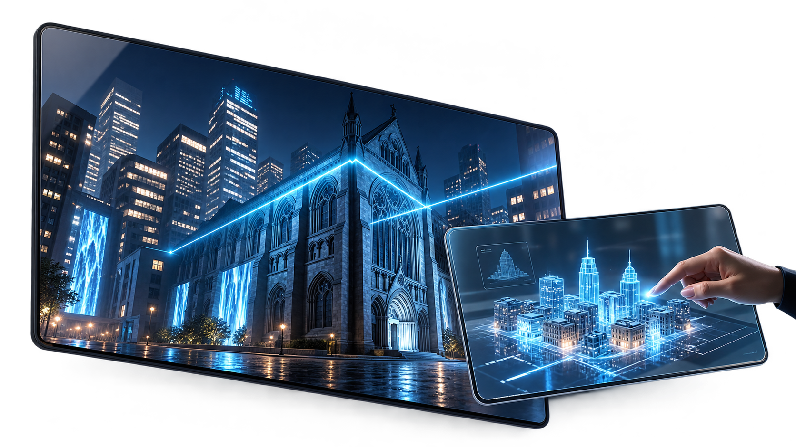
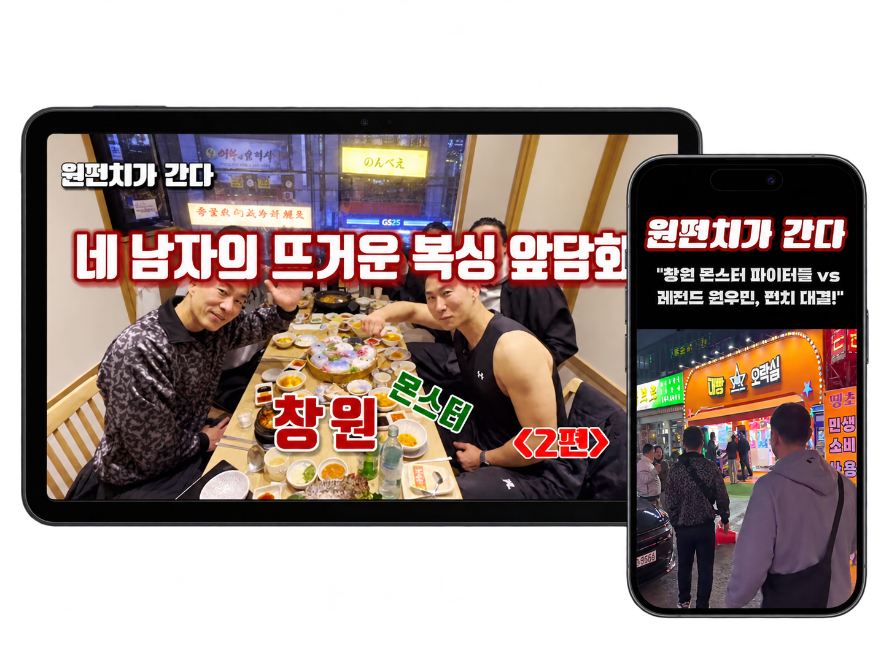

PORTFOLIO
TABLE OF
CONTENTS
배우고, 고민하고, 직접 만들어온 과정을 담았습니다.
작은
시도들이 하나의 결과가 되기까지의 기록입니다.
INTRODUCTION
생각은 화면으로, 배움은 결과로. 배우는 것에 머무르지 않고, 직접 만들고 다듬으며 제 것으로 만들어갑니다.
ABOUT ME
“이 정도면 됐지”보다 “조금만 더”를 생각합니다.
작은 차이가 화면의 완성도를 만든다고 생각합니다.
새로운 것을 배우고 직접 부딪혀 보며, 더 보기 좋고,
더 사용하기 좋은 결과를 만들어가고 있습니다.
PROJECT
PORTFOLIO
배운 것을 직접 구현하며 쌓아온 프로젝트입니다. 디자인부터
개발까지, 과정과 결과를 함께 담았습니다.
01. Interactive Web – DippingBook
AI 기반 독서 프리뷰 플랫폼 · Team Project
02. Interactive Web – LEGO World
레고 브랜드 경험을 담은 인터랙티브 웹 · Team Project
03. Interactive Web – Night Runner
도심 야간 러닝 코스 큐레이션 서비스 · Personal Project
PROJECTS &
CONTESTS
실제 공모전에 도전하며 기획부터 완성, 제출까지 경험한
프로젝트입니다.
LET'S
CONNECT
배우는 데서 멈추지 않고, 직접 만들고 개선하며 성장하고
있습니다.
프로젝트 · 협업 · 채용과 관련된 연락을 언제든 환영합니다.
DIPPING
BOOK
AI로 먼저 맛보는 독서 프리뷰 플랫폼
책을 한 번에 다 읽기 부담스러운 사용자를 위해, AI 프리뷰와 쉬운 글로 도서의 핵심을 가볍게 경험할 수 있도록 구성한 웹 프로젝트입니다.

사이트 방문하기 ↗AI Video Production
Video Editing
Generative AI
LEGO
WORLD
작은 블록에서 시작되는 무한한 상상
레고를 주제로 선명한 컬러와 블록 형태의 인터페이스를 활용해, 브랜드 특유의 즐거움과 탐험하는 경험을 담은 인터랙티브 웹 프로젝트입니다.

사이트 방문하기 ↗AI Video Production
Generative AI
NIGHT
RUNNER
도심의 밤을 더 안전하게 달리는 방법
야간 러닝 코스를 안전성·난이도·편의시설 기준으로 탐색하고, 원하는 코스를 저장하거나 러닝 메이트와 연결할 수 있도록 기획한 개인 웹 프로젝트입니다.

사이트 방문하기 ↗Web Design
Front-end
Generative AI · AI Image Generation
MY
FREQUENCY
나의 주파수: AI로 그리는 하루의 설렘
평범한 하루 속 나를 설레게 하는 순간을 AI 비주얼로 확장해 표현한 세로형 쇼츠 프로젝트입니다. 커피 한 잔의 루틴부터 몰입의 순간, 노을빛 질주까지 ‘가장 나다운 에너지’를 하나의 이야기로 구성했습니다.

AI Video Production
Video Editing
45 sec
General Division
DIGITAL
CANVAS
디지털 캔버스: 시공간을 넘어선 도시
역사와 문화, 미래 기술이 디지털 트윈을 통해 하나의 도시로 연결되는 과정을 담은 AI 미디어 아트 영상입니다. 과거의 건축물이 데이터로 해체되고 빛과 홀로그램, 미디어 파사드로 재구성되는 흐름을 12개의 시네마틱 장면으로 표현했습니다.

AI Visual Direction
AI Video Production
1 min 18 sec
AI Short-form
Veo 3.1
BOXING
CONTENT
복싱 인터뷰 · 토크 · 트레이닝 콘텐츠
YouTube 콘텐츠의 촬영과 편집 과정을 직접 경험해 본 프로젝트입니다.
복싱을 주제로 총 4편의 영상과 2편의 Shorts를 편집했습니다.
인터뷰·대화·트레이닝 장면의 흐름을 콘텐츠에 맞게 구성했습니다.
작업한 영상 중 1편과 Shorts 1편을 선별해 소개합니다.

2 Shorts